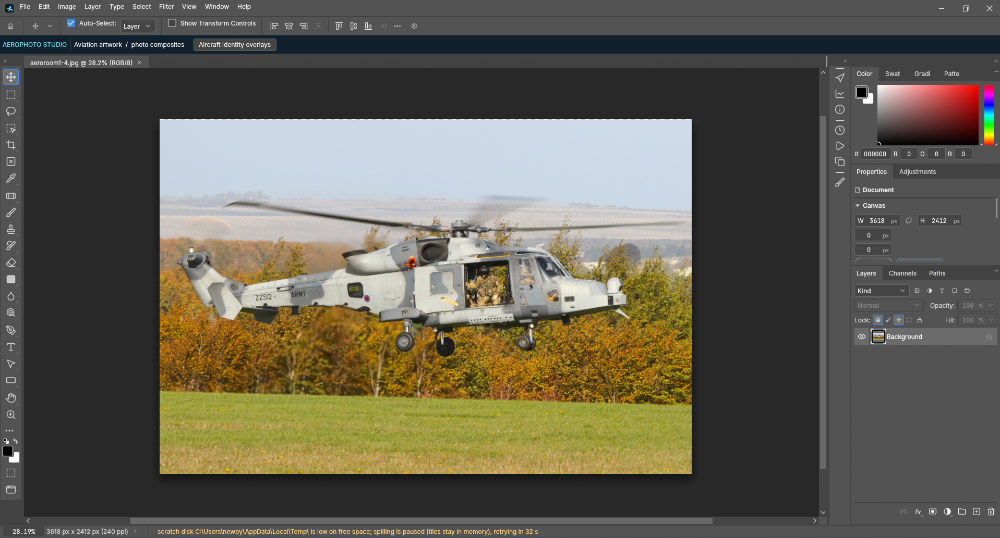

Build on layers
Combine visual elements without flattening the work into a single step.
Layer-based graphics and compositing for aircraft artwork, creative edits, identity overlays and aviation-focused visual design.
Windows x64 · Free public beta

Actual Windows application screenshotA workspace for the creative work that goes beyond a conventional photo edit.
Three simple stages for getting started with AeroPhoto.
Combine visual elements without flattening the work into a single step.
Create aircraft identification graphics and overlays.
Compose artwork, graphics and edited photographs in one canvas.
Download the Windows beta directly or install it through the unified AeroStudio Launcher.